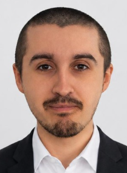

2025 · Expérience professionnelle
Administrateur Systèmes, Réseaux & Cybersécurité
CESAM SEED
Environ un an d’alternance : administration systèmes et réseaux, virtualisation VMware, sauvegarde, supervision et sécurisation des infrastructures.
Administrateur Systèmes, Réseaux & Cybersécurité
Diplômé d’un Bachelor Administrateur d’Infrastructures Sécurisées, j’ai acquis une première expérience chez Kertios et CESAM SEED. Je souhaite aujourd’hui approfondir mes compétences dans la sécurisation des infrastructures IT.

Disponible immédiatement pour un Mastère Expert Cybersécurité de 24 mois.
Depuis mon plus jeune âge, l’informatique occupe une place importante dans ma vie. J’ai toujours passé beaucoup de temps sur mon ordinateur, à découvrir de nouvelles choses, à résoudre les problèmes que je rencontrais et à apprendre à me débrouiller par moi-même.
Ayant grandi avec une mère informaticienne, j’ai été familiarisé très tôt avec cet univers. Mon orientation vers l’informatique s’est donc faite naturellement, mais surtout par passion. J’ai choisi d’en faire mon métier parce que j’aime comprendre le fonctionnement des technologies, relever des défis techniques et continuer à apprendre.
Après l’obtention de mon Titre Professionnel Technicien Informatique en 2024, puis de mon Bachelor Administrateur d’Infrastructures Sécurisées en 2025, j’ai consolidé mes compétences lors d’un stage de trois mois chez Kertios et d’une année d’alternance chez CESAM SEED.
Ces expériences m’ont permis d’évoluer du support informatique vers l’administration des systèmes et réseaux, la virtualisation, les sauvegardes et la sécurisation des infrastructures. Elles ont également renforcé mon intérêt pour la cybersécurité et la protection des environnements informatiques.
En parallèle, je développe Aegis Infra Lab, mon laboratoire personnel, pour expérimenter, mettre en pratique mes connaissances et documenter mes réalisations. C’est aussi une manière de continuer à apprendre et de cultiver cette passion qui m’accompagne depuis toujours.
Ce qui me motive : comprendre les interactions entre les systèmes, les réseaux et les mécanismes de sécurité, puis rechercher des solutions adaptées aux besoins réels.
Mon approche : apprendre en pratiquant, documenter mes réalisations et progresser sur des sujets comme la segmentation réseau, le contrôle des accès, la supervision et la continuité de service.
Des compétences développées en entreprise et approfondies à travers mes projets techniques. Cliquez sur une carte pour découvrir les domaines sur lesquels je travaille.
Administration Windows Server 2022 et Debian, gestion des comptes et services, VMware ESXi / vCenter.
Configuration VLAN, ACL, DNS, DHCP et VPN. Contrôle des communications et filtrage via OPNsense.
Durcissement des systèmes, moindre privilège, gestion des droits, sécurisation des accès et vérification des configurations.
Synology Active Backup, snapshots, chiffrement, politiques de rétention, restauration et objectifs RTO / RPO.
Surveillance des services, suivi des événements, analyse des alertes et documentation des interventions.
Scripts Bash, automatisation des contrôles et suivi de services Linux avec systemd.
Résolution d’incidents, assistance aux utilisateurs, préparation de postes et maintien en condition opérationnelle.
Conception du laboratoire Aegis Infra Lab : pare-feu, domaine Windows, Debian et environnements virtualisés.
Une première expérience professionnelle en infrastructure IT, complétée par mes diplômes et mes projets personnels.
Environ un an d’alternance : administration systèmes et réseaux, virtualisation VMware, sauvegarde, supervision et sécurisation des infrastructures.
Diplôme obtenu en 2025. Administration d’infrastructures, systèmes, réseaux et sécurité.
Stage de trois mois : support informatique, préparation des postes, assistance et administration de base des systèmes et réseaux.
Diplôme obtenu en 2024. Support, systèmes, réseaux et exploitation informatique.
Formation technique · Support et infrastructure IT
J’y ai acquis les fondamentaux du support informatique : installation et configuration de postes Windows et Linux, diagnostic et résolution d’incidents, accompagnement des utilisateurs et premières interventions sur les systèmes et réseaux.
Bachelor Administrateur d’Infrastructures Sécurisées
J’ai approfondi l’administration des systèmes et réseaux, la virtualisation, la gestion des accès, les sauvegardes et la sécurisation des infrastructures. Mon projet de Bachelor m’a notamment permis de travailler sur le durcissement, la segmentation réseau et la supervision.
Trois parcours de formation complémentaires pour approfondir mes connaissances en cybersécurité et en réseaux.
Parcours consacré aux fondamentaux de la cybersécurité et à l'analyse des incidents et des menaces.
Parcours axé sur les compétences nécessaires à l'exploitation et au dépannage des réseaux informatiques.
Formation aux principes des réseaux, aux équipements et aux bases des communications IP.
Parcours de formation et attestations : distincts des certifications professionnelles CCNA et CyberOps Associate.
Projets personnels et professionnels autour de l’administration des systèmes, des réseaux et de la cybersécurité. Cliquez sur une carte pour découvrir le projet.
Laboratoire personnel de systèmes, réseaux et cybersécurité : domaine Windows, segmentation, pare-feu, Linux et documentation.
Découvrir le projet ↗Étude de cas : audit, durcissement et segmentation d’une infrastructure virtualisée, sauvegardes et supervision.
Découvrir le projet ↗Accédez directement au dépôt GitHub d’Aegis Infra Lab pour suivre le laboratoire, sa documentation et ses évolutions.
Voir le dépôt Aegis ↗Une opportunité d’alternance ou une question sur mon parcours ? Contactez-moi par e-mail ou scannez le QR code pour m’appeler.
Une proposition d’alternance ou une question sur mon parcours ? Contactez-moi facilement.
 Scannez pour m’appeler depuis votre téléphone
Scannez pour m’appeler depuis votre téléphone